约 个字 行代码 预计阅读时间 分钟
A Glimpse of Industrial Solutions
Anti-Aliasing
回顾：为何需要反走样？
由于光栅化时每像素采样数不够多，因此最终的解决方案是用更多的采样点。
Temporal Anti-Aliasing
时间反走样(temporal anti-aliasing)的特点：
- 跨帧（时间）分发/重用样本
- 与 RTRT 几乎完全相同
- 比如使用上一帧像素左上角的采样点，再上一帧像素右上角的采样点，右下，左下...
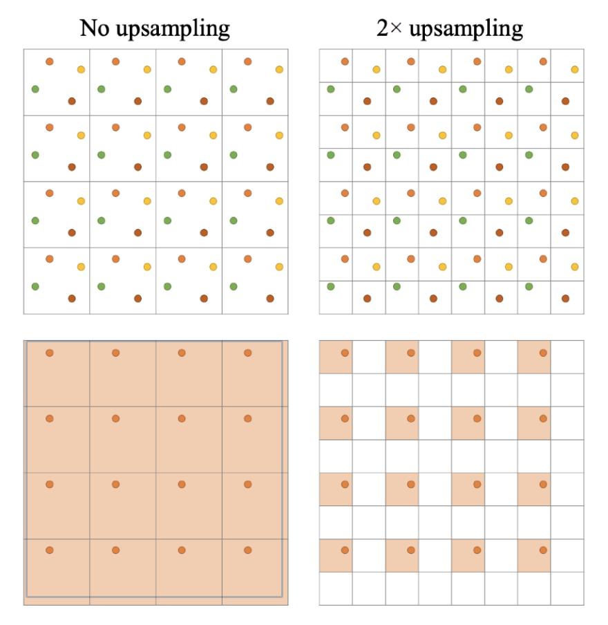
Notes on Anti-Aliasing
-
MSAA（多采样）vs SSAA（超采样）
-
SSAA 比较直接
- 先以更大的分辨率渲染，再降采样
- 最终的解决方案，但是成本高
-
MSAA 能改进性能
-
相同图元只渲染一次
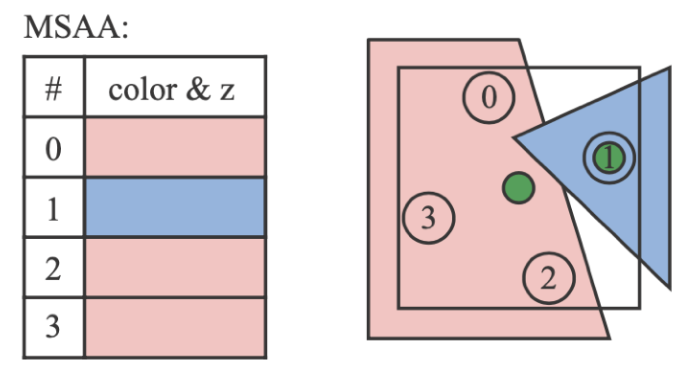
-
像素间复用采样点，从而节省采样数（比如下图中间两个采样点既可算作对像素 1 的贡献，也可算作对像素 2 的贡献）
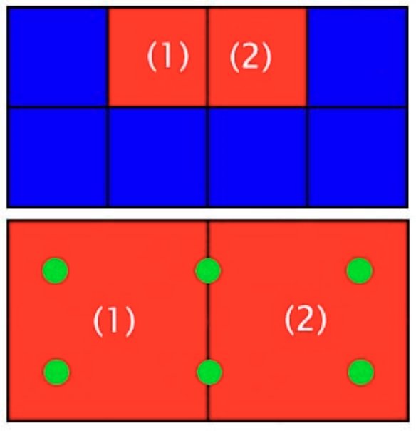
-
-
-
最先进的基于图像的反走样解决方案
- SMAA（增强型子像素形态抗锯齿(enhanced subpixel morphological AA)）
- 发展历程：FXAA -> MLAA（形态(morphological)抗锯齿）-> SMAA
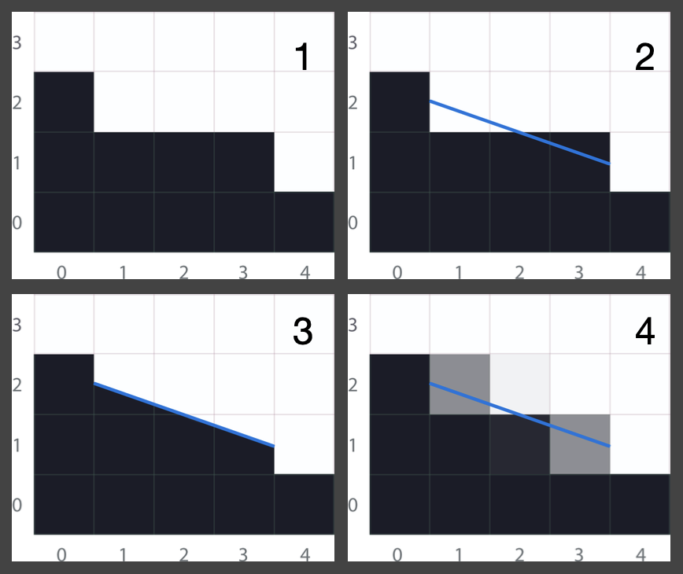
-
不要对 G-buffer 进行反走样操作
Super Sampling and DLSS
超分辨率(super resolution)（或超采样）的字面理解就是增加分辨率。相关的经典技术便是 DLSS（深度学习超采样(deep learning super sampling)）。
- DLSS 1.0：毫无来由 / 纯属猜测
- DLSS 2.0：另一种类 TAA 的应用，通过复用时间采样来提升分辨率
DLSS 2.0 遇到的主要问题是：一旦时间层面出现问题，约束(clamping)不再是一个可行项，因为对于每个更小的像素都需要知道其确切值。因此关键在于找到一个更好的利用时间信息的方案。
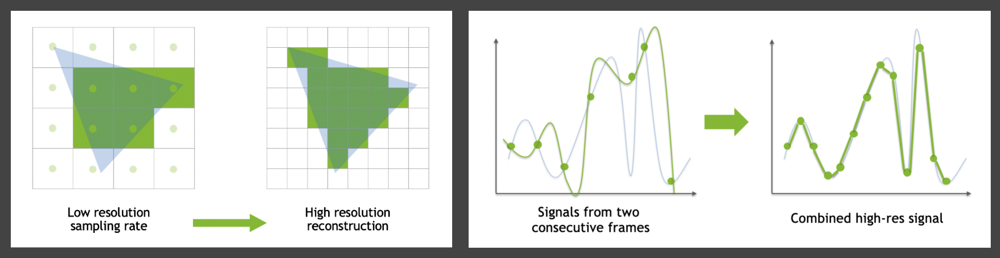
结果
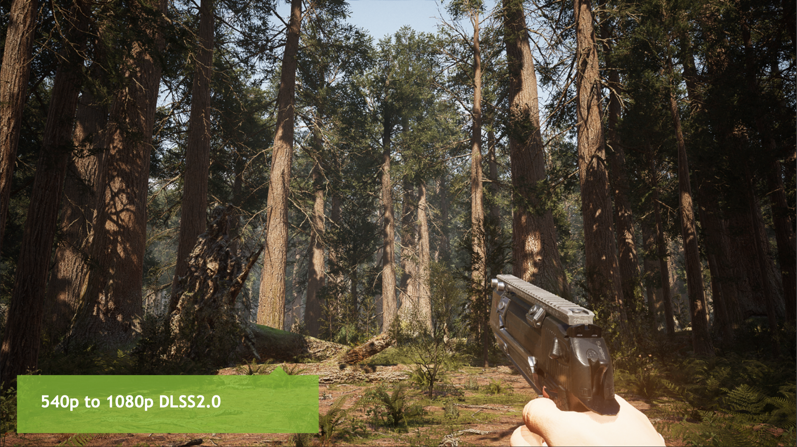
一个重要的实际问题是：如果 DLSS 本身每帧运行需 30ms，那它就已经失效了。解决方法是采用网络推理性能优化（机密内容）。
相对应 DLSS 的技术有：
- AMD：Fidelity FX 超分辨率技术
- Facebook：实时渲染的神经超采样技术
Shading
Deferred Shading
- 原本用于节省着色时间
-
考虑光栅化过程
- 三角形 -> 片元 -> 深度测试 -> 着色 -> 像素
- 每个片元都需要着色（在什么场景下？）
- 复杂度：O(片元树 * 光源数)
-
关键观察：由于深度测试/遮挡，大多数片元在最终图像中不可见，所以可以只对可见的片元着色
-
修改光栅化流程：
- 只需对场景进行两次光栅化
- 第一遍：不进行着色，仅更新深度缓冲区
- 第二遍相同，但由于现在可从深度缓冲区得知最近的片元，所以能保证仅对可见片元着色
- 隐含假设：对场景进行光栅化远快于对所有不可见片元进行着色（通常成立）
- 复杂度：O(片元数 * 光源数) -> O(可见片元数 * 光源数)
-
问题：难以实现抗锯齿
- 但可通过 TAA 几乎完全解决这一问题
Tiled Shading
另一种改进方法是块着色(tiled shading)，即将屏幕细分为块(tile)（比如 32x32 大小），然后对每个块进行着色。
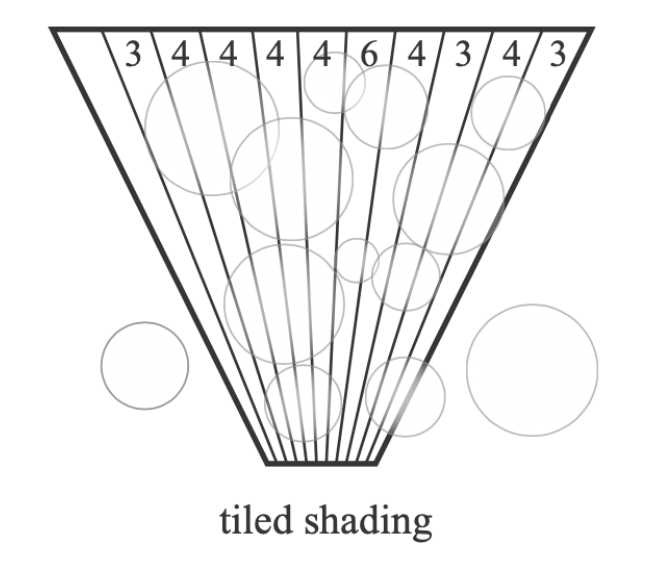
- 并非所有光源都能照亮特定块，主要是因为距离平方衰减
- 复杂度：O(可见片元数 * 光源数) -> O(可见片元数 * 每块平均光源数)
Clustered Shading
更进一步的改进技术是簇着色(cluster shading)。它将每个块进一步细分为不同的深度段，本质上将视锥体细分为 3D 网格。
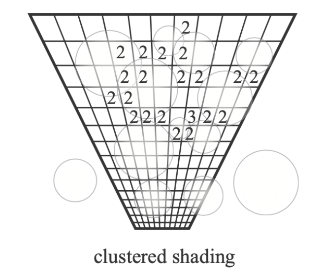
- 每个块的深度范围可能相当大
- 因此可能会识别出具有照亮该块能力的大量光源
- 但有些光源可能只照亮一个较小的深度范围
- 复杂度：O(可见片元数 * 每个块的平均光源数) -> O(可见片元数 * 每个簇的平均光源数)
Level of Detail Solutions
细节层次（LoD）非常重要，因为选择合适的细节层次可以节省计算资源，比如之前介绍过的纹理 MIPMAP 技术便是一种 LoD。而多级 LoD 的应用在 RTR 领域中常被称为「级联」(cascaded)。
例子
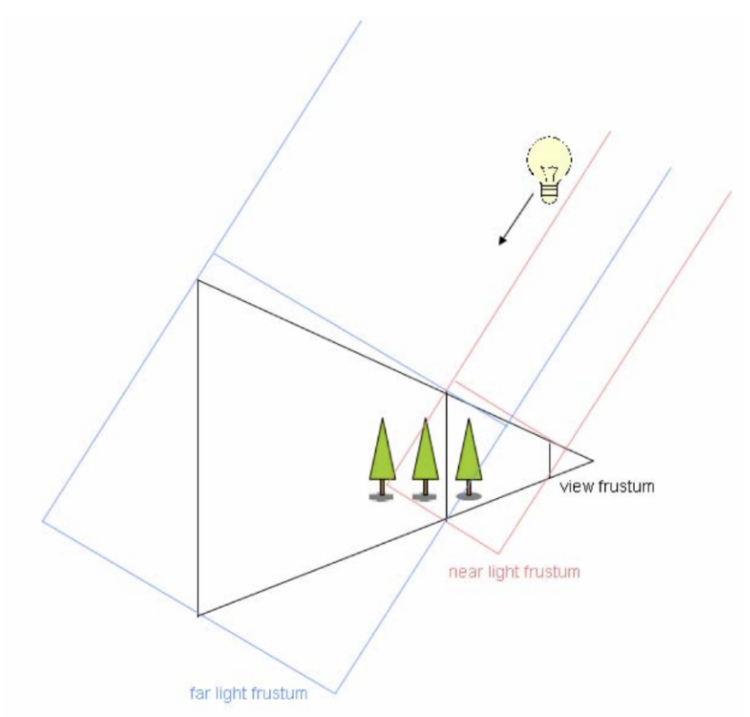
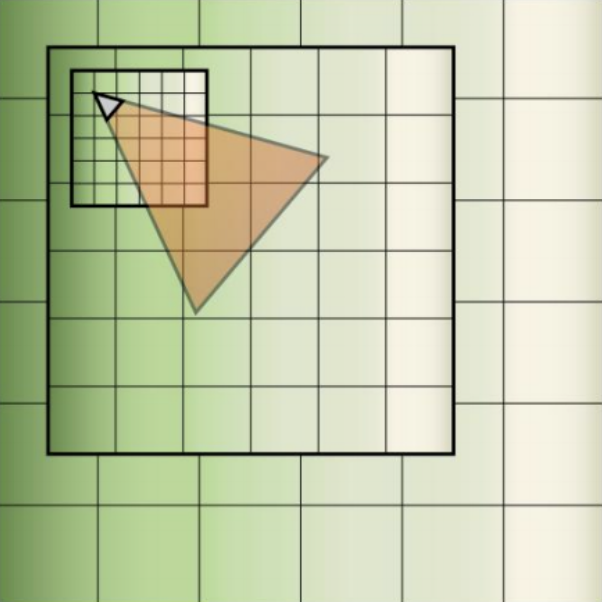
关键挑战
- 不同层级之间的过渡
- 通常在边界附近需要一定的重叠(overlapping)与混合(blending)
另一个例子：几何 LoD
- 预先生成一组简化的具有不同数量三角形的对象
- 根据与摄像机的距离，选择合适的对象（或对象的一部分）进行显示，确保没有三角形大于一个像素
- 由 TAA 解决跳变伪影的问题
- 这就是 UE5 中的 Nanite 技术（当然 Nanite 的功能远不止于此）
一些（较为严重的）技术难题
- 不同地点存在不同层级，裂缝(cracks)问题如何处理？
- 动态加载与调度不同层级时，如何最优利用缓存和带宽等资源？
- 使用三角形还是其他几何纹理来表示几何体？
- 如何通过裁剪(clipping)与剔除(culling)提升性能？
- ...
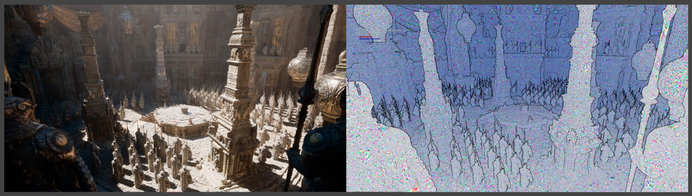
Global Illumination Solutions
通过前面的学习，我们知道：
- 屏幕空间光线追踪（SSR）有时会失效，比如超出屏幕外，不在相机内等
- 没有一种 GI 解决方案能完美适用于所有情况，除了实时光线追踪（RTRT），但现在完全使用 RTRT 的成本仍然过高
因此业界倾向于采用混合的解决方案：
- 使用 SSR 进行粗略的全局光照近似
- 当 SSR 失效时，切换到更复杂的光线追踪
-
无论是硬件（RTRT）还是软件（？）方式
-
软件光线追踪
- 近距离单个物体 -> HQ SDF（高质量有符号距离场）
- 整个场景 -> LQ SDF（低质量有符号距离场）
- 存在强方向光或点光源时的 RSM（反射阴影贴图）
- 在 3D 网格中存储辐照度的探针（动态漫反射全局光照，即 DDGI）
-
硬件光线追踪
- 不必使用原始几何体，可采用低多边形代理(low-poly proxies)
- 探针（RTXGI）
-
混合这些加粗标注的方法，就得到了 UE5 的 Lumen 技术
-
评论区